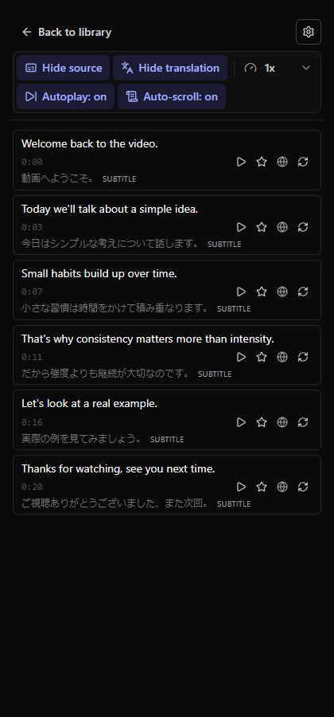
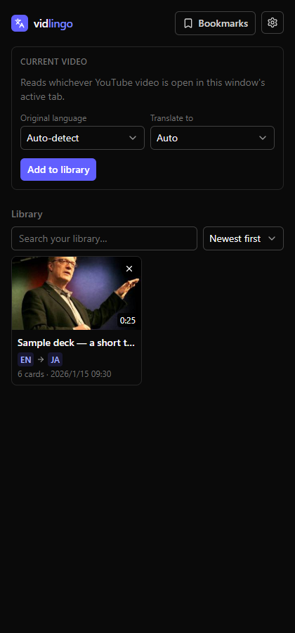
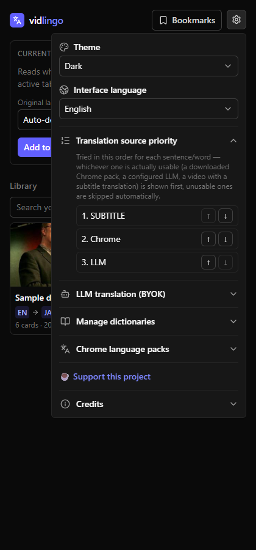

Right in a side panel next to the video — every caption line becomes a card you can translate, tap word-by-word, bookmark, and replay at any speed.

No account, no upload — the whole flow happens in your own browser.
Any YouTube video that has captions — auto-generated or manual, in any language.
vidlingo reads the transcript and translates it using a provider you control.
Tap any word for its definition, bookmark what you want to revisit, replay slower.
Six languages with real dictionaries, your choice of translation provider, and nothing kept on a server you don't control.
Japanese, Chinese, Korean, Spanish, French, and German — dictionary-backed word lookup, downloaded on demand.
Chrome's on-device translator (free, no key) or any OpenAI-compatible LLM endpoint you configure.
Save anything you want to revisit, export/import your bookmarks as a plain JSON file.
Slow down a tricky sentence, or let a whole deck autoplay while you follow along.
Your library lives in this browser only. No vidlingo server ever sees your videos or captions.
Auto-generated or manual — vidlingo reads whatever transcript the video already has.


Questions, bug reports, or feedback: support@usefluxora.com
vidlingo is free and BYOK by design — no ads, no relaying your data through vidlingo's own servers. If it's saved you time, a one-time coffee helps keep it maintained.